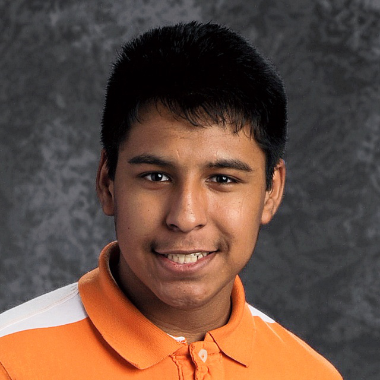

Hello! My name is Erik Menchaca. I have created this website for my professional portfolio in hope to find a co-op, internship, or a full-time job. I enjoy my academic career, studying Mobile Application Development with an emphasis of User Experience and User Interface Design.
Experience
- Made several Zoom recording demonstrations for all course assignments
- Wrote assignment grading rubrics
- Tutored with students who are taking her course during the semester
- Lectured several presentation/instructions
Education
Courses Taken
- Introduction to Programming
- Organizational Communication & Deaf Employee
- Survey of Visual Design
- Critical Reading & Writing
- FYW: Writing Seminar
- Programming Fundamentals I: Mobile Domain
- Advanced Mathematics
- Intro to Psychology
Previous Projects
Web Design — Spring Semester 2205
FW: Writing Seminar — Spring Semester 2225